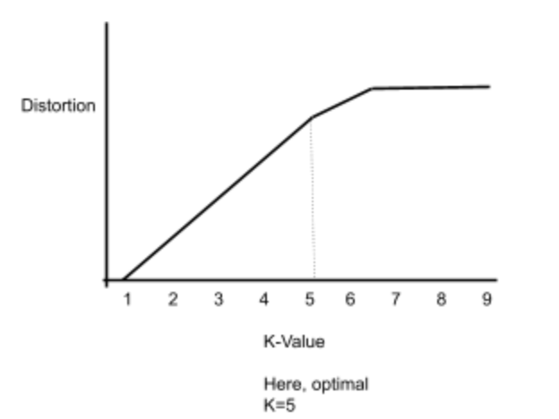

- Machine Learning Exercises
-
Session 1: Introduction to Machine Learning
- Introduction to Machine Learning
- What is machine learning
- Influences of Machine Learning
- Components of Machine Learning
- Representation
- Evaluation
- Optimization
- Types of Machine Learning
- Challenges of Machine Learning
- Before starting your own machine learning project
-
Session 2: Bayesian Decision Theory
- What is a Bayesian network?
- How is a Bayesian network represented?
- What Directed Acyclic Graphs Tell Us
- Applications of Bayesian Networks
-
Session 3: Intro to Supervised Learning
- Intro to Supervised Learning
- When to use supervised learning
- Types of Supervised Learning
- Classification
- Regression
- Examples of Supervised Learning Algorithms
- Linear Regression
- Logistic Regression
- Decision Trees
- Random Forest Regression
-
Session 4: Intro to Unsupervised Learning
- When to use unsupervised learning
- Types of Unsupervised Learning
- Clustering
- Association
- Example of an Unsupervised Learning Algorithm
- K-Means Clustering
-
Session 5: Dimensionality Reduction
- Intro to Dimensionality Reduction
- Feature Selection
- Types of Feature Selection
- Wrappers
- Filters
- Embedded
- Feature Extraction
- Example of A Feature Extraction Technique
- Principal Component Analysis
-
Session 6: Perceptrons and Neural Networks
- Influence of Biological Neurons
- Development of Neural Networks
- Perceptron
- What is a perceptron?
- Parts of Perceptron
- Neural Network
-
Session 7: Deep Learning
- Deep Learning vs Machine Learning
- Deep Neural Network
- Deep Learning
- Transfer Learning
- Number of Neurons for Each Hidden Layer
-
Session 8: Machine Learning Research Trends
- Applications of Machine Learning in Various Fields
- Full-Stack Deep Learning
- Natural Language Processing
- Natural Disaster Warning
- Gaming
- Resources to Look into Latest Research
Session 4: Unsupervised learning
Intro to Unsupervised Learning
- Data is not labeled. Machines look for patterns with clustering without supervision
- Output is not necessarily what you want and can be completely random because it’s so unstructured and the machine will make its own observations
When to Use Unsupervised Learning
- When you have large amounts of messy, unlabeled data that might even contain useless information
- When you want to train a machine to find patterns through its observations, without any supervision
Types of Unsupervised Learning
- Clustering
- Organizes data into patterns based on certain properties like size, color, shape, etc. There can be several properties. Depending on the algorithm used for clustering, will typically have to specify the desired number of clusters.
- Example: classifying the species of an animal
- Association
- Uses the data to figure out the relationship between certain components of the dataset.
- Example: understanding what customers are likely to purchase based on what they purchased previously.
Examples of Unsupervised Learning Algorithms
- K-Means Clustering
- Clusters = how the data is organized, there can be multiple variations of clusters for each K-value
- K = the number of clusters you want. The K-value can be any selected value but the optimal K value can be found with the elbow method.
- Elbow Method

- Make a graph where:
- Y = Distortion, or Average of squared (Euclidean) distance between center of each cluster
- X = Number of Clusters
- Make a graph where:
- Eventually, there is a point when a new cluster is added (K value increases) that the total variation for each cluster doesn’t decrease as quickly as it does previously
- Select K distinct data points (each of the K data points will be a cluster)
- Measure the distance between each point to each of the distinct selected data points. However, don’t measure the distance between one selected K data point to another selected K data point.
- Whichever cluster has the smallest distance will contain that point.
- Keep repeating until each point is clustered.
- Calculate the average of each cluster, mark those average points, then measure that distance between each point and each average point.
- Keep repeating this until there is no change. When there’s no change, this is the official cluster for the assigned K-value
- To see how well this K-value worked out, add the variation for the cluster and keep repeating with various starting points. The closer the data points are to the average, the better the model.
- This distance depends on the dimension of the data
- one-dimensional (line)
- Simple, look at the line chart
- two-dimensional (x-y graph)
- Use the Pythagorean theorem to find the distance of hypotenuse
- sqrt(x^2 + y^2)
- For the mean, calculate the center
- 2+ dimensions (heatmap)
- With 2 variables sqrt(x^2 + y^2)
- 3 variables (sqrt(x^2 + y^2 + z^2)
- More than 3 variables: sqrt(x^2 + y^2 + z^2+a^2…)